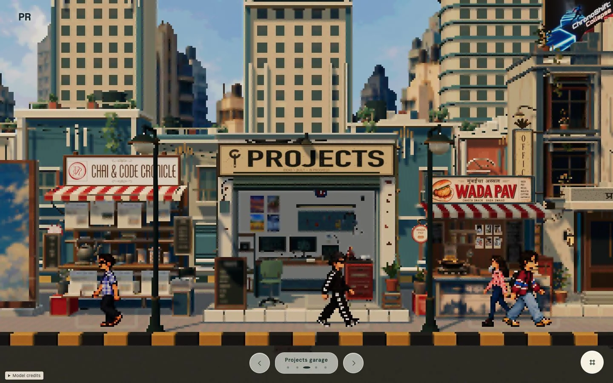
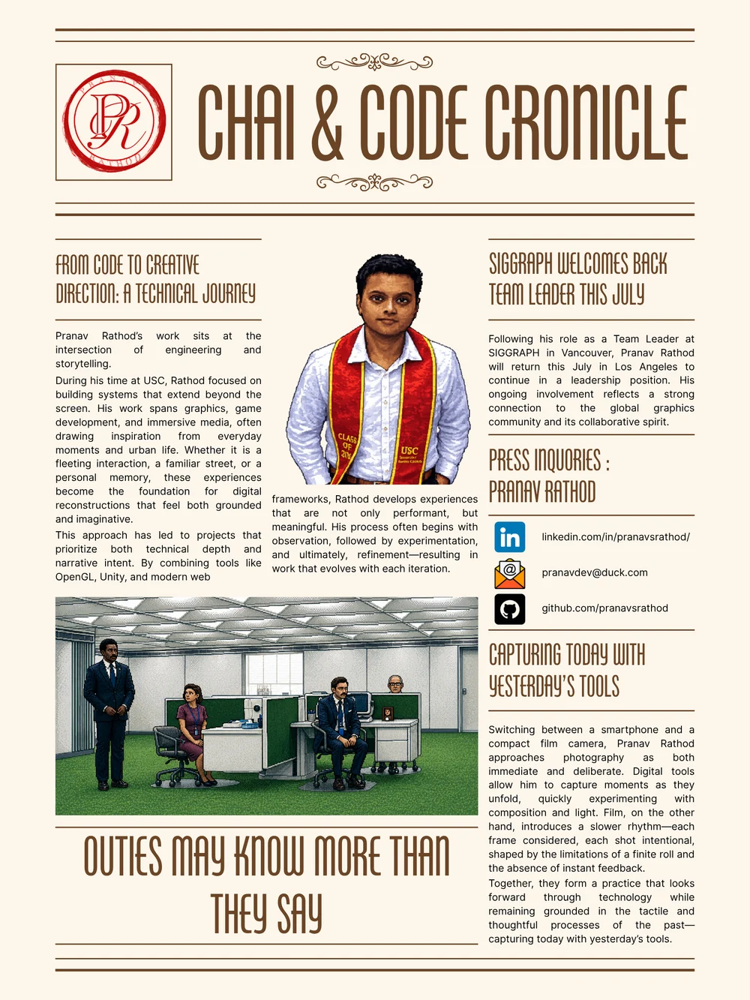
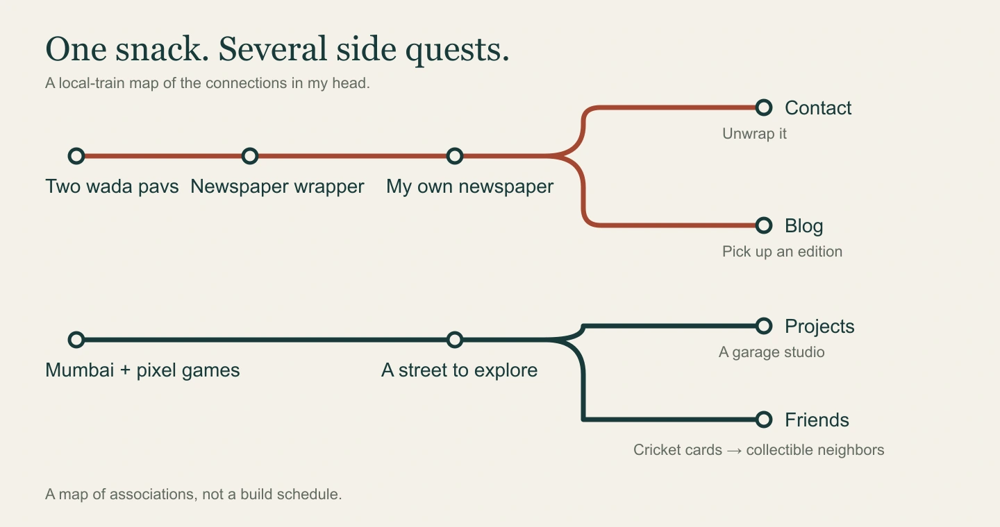
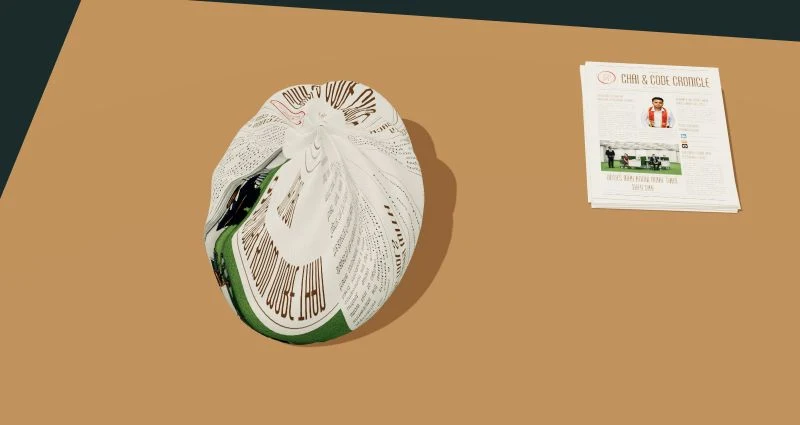
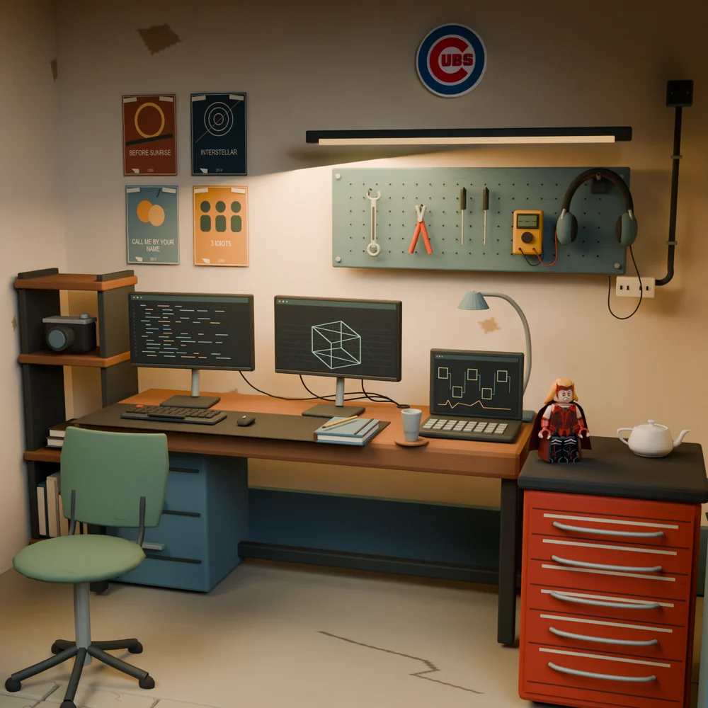
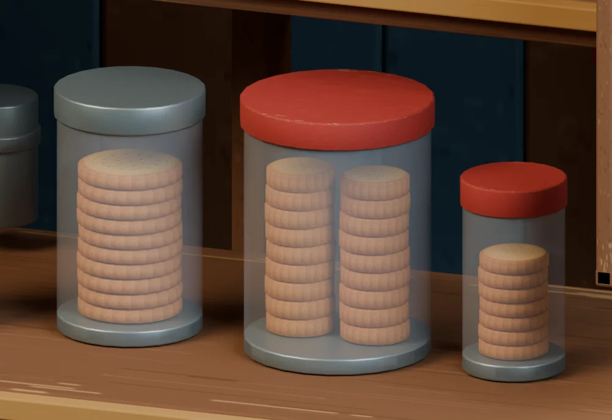
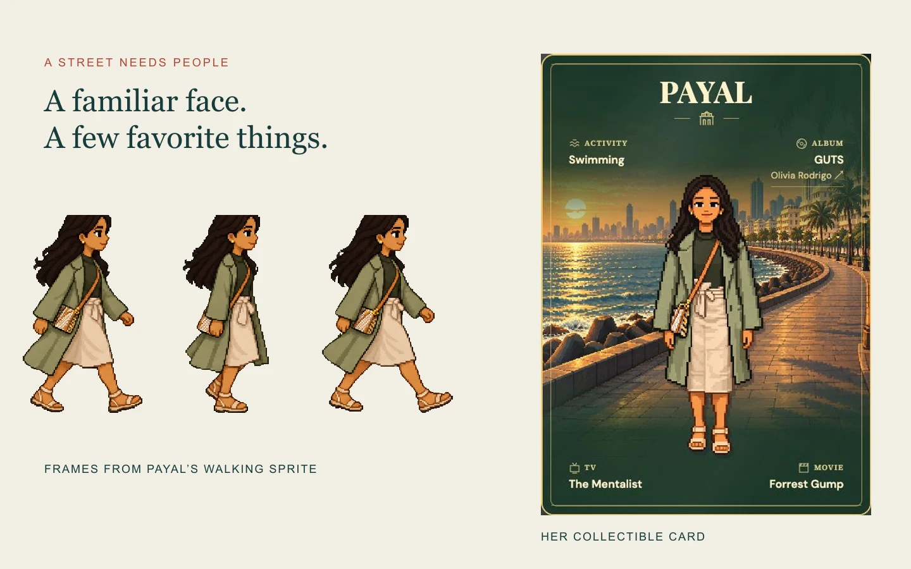

Act I: Naturally, I Bought Two
Last year, while visiting India, I was on my way to my grandma’s place when we stopped for wada pav.
Naturally, I bought two.
They came wrapped in newspaper. I ate the first one without giving the packaging a second thought. When there’s a freshly made wada pav in front of you, your priorities are pretty clear.
But when I reached for the second, an advertisement caught my eye. I don’t remember what it said. I do remember that, for some reason, it stayed with me after the snack was gone.
A few months later, in a Mobile Game Development class, I kept noticing the personality packed into games like EarthBound, A Link to the Past, and Streets of Rage. Tiny sprites. Expressive worlds. An unreasonable amount of affection for a collection of squares.
I was studying Computer Science with a focus on Multimedia and Creative Technologies. I wanted to make something that put the creative in Creative Technologist.
And if I was building a little world about myself, shouldn’t it reflect where I came from?
I grew up in the suburbs of Mumbai: roadside stalls, rickshaws, crowded signs, chai breaks, and a thousand things happening at once.
Remember Ishaan in Taare Zameen Par, wandering around Mumbai, completely absorbed in everything happening around him? That’s a pretty good description of how I’ve always liked experiencing the world. Finding something interesting in what everyone else might walk past.
My existing portfolio already had an editorial, magazine-like feel. I liked it. I just started wondering what would happen if its pages also existed as places.
Usually, Contact is a few links. Email, LinkedIn, GitHub. Maybe a form if you’re feeling fancy.
I wanted mine wrapped around a wada pav.
Obviously, this required my own newspaper: The Chai & Code Chronicle. My projects. My interests. My work. Apparently, the most pressing news of the day consisted mostly of me.
Not going to lie, I felt a little like Oprah.
You get a headline! Everybody gets a headline!

Then I realized I had a newspaper, a blog, and a fairly serious interest in chai. The blog could live at a tea stall. My projects could occupy a garage studio.
This is roughly how a snack became a neighborhood.

Act II: The Five-Hour Waiting Room
I started in Canva, using a newspaper template, then brought the exported image into Blender as a texture. All I needed was for it to fold, crumple, and unwrap around two wada pavs.
The newspaper had other plans.
I had beginner-level Blender experience. Natural-looking deformation was beyond what I could manage, even after experimenting and asking people for help. The project entered that familiar folder: I’ll come back to this.
In early September, I saw Astra working with Blender. I wasn’t expecting “make me a beautiful Mumbai street” to produce a finished portfolio. Although, admittedly, that would have been nice.
I gathered references, drew rough sketches, and worked through one building at a time. For the first time, the place in my head was beginning to exist outside it.
Then I hit my usage limit.
A Budget Becomes a Brief
I called these interruptions the five-hour token blackout. Ten minutes earlier, I’d been obsessing over a model. Now I was sitting in the waiting room.
There was technically a solution: pay for more usage.
But I was working with my existing ChatGPT Plus subscription, and I was absolutely not about to justify an upgrade because I couldn’t get a virtual chai stall to look right.
I’d already committed to building Mumbai on the internet. I needed to draw the line somewhere.
So I started using the waiting time to review, sketch, and write things down.
Increasingly extensive Markdown things.
What should change? What should stay? Which references mattered? What would count as finished? I’d spent too many interactions explaining decisions halfway through making them. Writing a handoff forced me to notice decisions I hadn’t made at all.
I learned to write better documentation because I was too stubborn to pay for more tokens.
My Imaginary Chai Stall Gets a Production Department
Those documents gave specialized AI reviewers something specific to examine: an architect for proportions and placement, a set designer for composition and props, and a Blender technician for geometry and exports. One implementer could work from a combined brief, instead of several agents editing the same scene.
At one point, the biscuits were floating inside their jars.
This was not the atmosphere I was going for.
The next brief asked for grounded golden stacks, clearer glass, and room below the lids. Keep the stall. Keep the newspapers. Please put the biscuits down.
The garage taught me a different lesson. A cleaner studio had started looking like a room behind a shutter. I wanted a converted Mumbai workshop. Supports, tools, conduit, and hanging headphones helped bring that character back.
“Fixed” and “feels right” were becoming two different questions.
Notes from my imaginary production department
The loop behind the little world.
- I notice→
- I write the brief→
- AI builds & checks→
- I look again↶
Architect · Set designer · Blender technician. One scene writer. My judgment comes back around.
The newspaper had other plans
The newspaper had other plans
- The idea
- A wrapper opens around two wada pavs, then becomes readable contact information.
- The surprise
- Corner curls made a boat. Separate panels made a box. An open surround still left the food visible.
- The smaller brief
- One continuous sheet. Hide the pavs first. Spread unevenly, then settle flat.
- What I inspected
- Inspect the motion between endpoints, not just the final pose. Topology and clearance checks help; my eyes still get a vote.

Does the parcel actually hide both pavs?
From the project notebook
CONTACT_EXPERIENCE.md, line 55; INTERVIEW_STUDY_GUIDE.md, lines 318–326; HANDOFF.md, lines 420–442.
The garage identity crisis
The garage identity crisis
- The idea
- A Mumbai garage converted into my creative workspace.
- The surprise
- The cleaner studio started reading as a room behind a shutter.
- The smaller brief
- Keep the facade, footprint, and monitor. Bring back workshop supports, conduit, tools, and hanging headphones.
- What I inspected
- Inspect furniture joins, supported props, and the actual monitor camera path. A valid export still has to feel like this place.

From the project notebook
INTERVIEW_STUDY_GUIDE.md, lines 518–530; STUDIO.md, line 41; HANDOFF.md, lines 176 and 214.
Biscuits versus gravity
Biscuits versus gravity
- The idea
- A lived-in chai counter, with biscuits you could recognize through the jars.
- The surprise
- Biscuit pieces were floating inside their jars.
- The smaller brief
- Ground golden stacks on the jar bases. Leave headspace. Clarify the glass. Keep the rest of the stall.
- What I inspected
- Review both render angles, preserve the newspapers and jar positions, then export and validate. Stop when the named change is done.

From the project notebook
chai-code-chronicle/reviews/blog-revision/revision-brief.md, lines 1–37; agents/05_REVIEW_PROTOCOL.md.
Specialist roles describe the documented workflow; the worklog records which reviews actually ran. A check passing and another agent agreeing are different kinds of evidence.
The notebook below the cheerful little world was full of these loops. Sometimes the brief needed to change. Sometimes the implementation did. Sometimes another agent agreed with the first one and they were both confidently missing the point.
I still had to look.
From the original newspaper experiments
Act III: A Street Needs People
Individual Blender models still weren’t a website. Exporting them as GLB files gave Three.js the geometry, materials, and textures it needed to assemble the street.
I’d never worked with Three.js before. Graphics and game-development experience gave me somewhere to start; AI handled a substantial amount of the coding and asset integration. I supplied the direction, references, constraints, and corrections.
The wrapper became Contact. The garage monitor opened my project archive. The chai stall’s newspapers became entry points to actual articles. Returning needed to feel like stepping back onto the same street.
Friends helped me think about how it felt to explore. Eventually, I noticed something fairly obvious.
Where were the people?
So I started asking my friends whether they’d like to become walking pixel characters.
A perfectly normal question, obviously.
Their photographs became references for illustrated sprites. But I wanted visitors to discover something about each person, too. That brought back the cricket trading cards I collected growing up: little packs for around fifty rupees, players, statistics, and a folder I still have.
Clicking a friend could open a collectible card. I asked everyone to choose a movie they liked. Not necessarily their all-time favorite. Not their Letterboxd Top Four. Definitely not something selected to demonstrate impeccable taste in cinema.
Just a movie they liked.
Fortunately, people replied quickly, considering I’d essentially recruited them into my increasingly elaborate digital arts-and-crafts project.

The characters acquired little routines, too. Nico stops for wada pav. Kartik drinks chai. Vrishabh photographs the mural. The street was becoming somewhere people had a reason to stop.
None of this arrived as a complete plan. A wrapper suggested a newspaper. The newspaper needed a stall. The street needed my friends.
AI helped me build far more of it than I could have managed alone in the same time. If I approved something and put my name on it, though, I was responsible for what visitors experienced.
The tools could help construct the world. They couldn’t decide which memories belonged in it.
I started with two wada pavs. Somewhere along the way, I found a way to bring more of myself into the work.
Visual credits
Images show this project’s saved artwork, model renders, and browser captures. The maps and revision notebook were prepared for this story. Small props visible in the street and garage use adapted CC BY 4.0 models: Tuk Tuk Rikshaw by alnmathew; Dog by sv.stats; LEGO Scarlet Witch by Ramón Ruiz; Art Reference: Utah Teapot by Smallpoly; and Chicago Cubs by Laurance Animations.